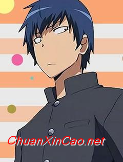
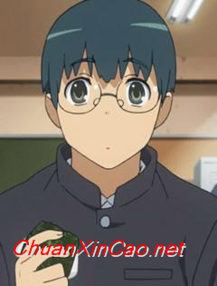

角色介绍
-

高须龙儿
属性： 金牛座 血型A 齐耳 白色皮肤 认真 黑色眼睛 碎发 洁癖 温柔 学生 蓝发
高须龙儿，所属动漫《龙与虎》中的人物。面相凶恶性格温柔，家住被豪华公寓挡住阳光的平民房，料理万能，家事万能，得意技“清洁”。有着一双遗传自父亲的凶恶眼神，以至于到哪里都会被先误认为“不良少年”，实际上是对谁都很温柔的老好人。
-
逢坂大河
属性： 射手座 血型O 及腰 贫乳 毒舌 暴力女 长发 傲娇 白色皮肤 长发飘逸 任性 棕色眼睛 冒失 爱哭鬼 棕色 学生
逢坂大河，所属动漫《龙与虎》中的人物。是有着一头长发和非常精致的脸庞，身高为143.6公分的娇小身材特点的美少女。傲娇、凶暴、任性但又有点爱哭的冒失娘。对于家事完全不拿手，总是要高须龙儿照顾。总是穿着棉制折边的衣服，常被说像人偶。自称身高145厘米，好像可以捧在手中一样的娇小。
-
栉枝实乃梨
属性： 到脖 天然呆 白色皮肤 棕色眼睛 莫西干头 红发
简介：栉枝实乃梨（栉枝 実乃梨）配音：堀江由衣、林美秀 年龄：16 身高：158cm 就读于大桥高中2年C班。 逢坂的好友，昵称“小实”（みのりん）。 女子垒球部的部长。有些中二病、无铁炮，说话语调常常有变化，在做事上显得异想天开。 有很多兼职
-

北村祐作
属性： 齐耳 白色皮肤 绿色眼睛 碎发 正直 绿发
北村祐作（北村 祐作） 配音：野岛裕史、何志威 身高：170cm 就读于大桥高中2年C班。 龙儿的好友，班长、学生会副会长、男子垒球部的部长。性格爽朗正直，言谈举止不拘小节。 因为性格的原因很容易和同班同学打成一片，也因此受到很多女生的欢迎